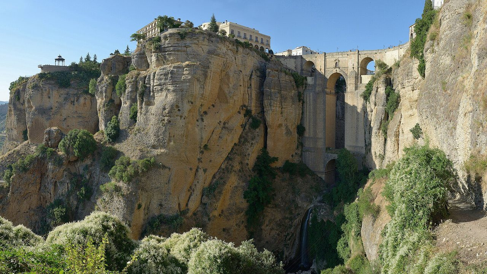

Race, Andalusian White Villages

Behind
Best +0:01
371W
Target 418 W-47 W
- Cadence
- 87rpm
- Heart
- 140bpm
- Speed
- 26.5km/h
Recover13 of 22
1:27
Next: · 1:00 at level 24
+0.2%
255 m climbed
15.47 km
10
Resistance / 32
Solo races your best-time ghost: position reads Ahead or Behind, and solo alone gets a Pause button. Frozen at 36:33.